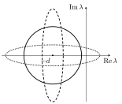

6 Many interacting species: random matrices and stability
Real communities contain hundreds of species linked by thousands of interactions whose strengths are unknown and vary in time. Specifying them one by one is impossible. Physics suggests another route. Treat the interaction network as a random sample from an ensemble with a few statistical parameters (number of species, connectance, interaction strength, correlations), and ask which properties hold for almost every member of the ensemble. This chapter develops the generalised Lotka–Volterra model, reduces its stability to the spectrum of a random matrix, derives the classical spectral laws (semicircle, circular, elliptic), and obtains May’s complexity–stability criterion and its extensions to structured ecological networks.
6.1 Generalised Lotka–Volterra dynamics
For \(S\) species with abundances \(N_i\), \[\frac{dN_i}{dt} = N_i\Bigl[r_i - \sum_{j=1}^SM_{ij}N_j\Bigr], \qquad i = 1, \dots, S.\] The diagonal \(M_{ii} = 1/K_i\) encodes self-regulation (carrying capacities \(K_i\) when \(r_i = 1\)). The off-diagonal \(M_{ij}\) encode interactions: species \(j\) harms \(i\) if \(M_{ij} > 0\) and benefits it if \(M_{ij} < 0\). The sign pairs \((M_{ij}, M_{ji})\) classify interactions: \((+, -)\) predation, \((-, -)\) mutualism (both benefit), \((+, +)\) competition, \((0, \pm)\) commensalism or amensalism.
Two questions arise. Coexistence: starting from \(S\) species, how many survive? Stability: is the resulting equilibrium stable, locally or globally, and can a new species invade?
A coexistence equilibrium solves \(\mathbf r = M\mathbf N^*\). It is feasible if all \(N^*_i > 0\). Linearising, \(\delta\dot N_i = \sum_jJ_{ij}\delta N_j\) with community matrix \[J_{ij} = -N_i^*M_{ij}.\] The equilibrium is locally stable iff all eigenvalues of \(J\) have negative real parts.
If \(M\) is antisymmetric (\(M_{ij} = -M_{ji}\), pure predator–prey with no self-regulation) and \(N^*_i > 0\), the eigenvalues of \(J = -D M\), \(D = \operatorname{diag}(N^*_i)\), are purely imaginary.
Proof. \(J\) is similar to \(D^{-1/2}JD^{1/2} = -D^{1/2}MD^{1/2}\), which is real and antisymmetric, hence has imaginary eigenvalues. \(\square\)
Neutral oscillations, as in the two-species Lotka–Volterra model, are structurally unstable. Self-regulation turns them into damped oscillations.
If \(M\) is symmetric and positive definite, the function \[Q(\mathbf N) = \sum_i\Bigl[N_i - N^*_i - N^*_i\ln\frac{N_i}{N^*_i}\Bigr]\] is a Lyapunov function and the feasible equilibrium is globally stable. More generally, for symmetric positive-definite \(M\) the dynamics maximises \[\mathcal L(\mathbf N) = \sum_ir_iN_i - \frac12\sum_{ij}N_iM_{ij}N_j,\] which increases along trajectories; the stable state is the unique maximiser of \(\mathcal L\) on \(\mathbf N \geq 0\), where some species may be extinct.
Proof. \(\dot Q = \sum_i(N_i - N^*_i)(r_i - (M\mathbf N)_i) = -\sum_{ij}(N_i - N^*_i)M_{ij}(N_j - N^*_j) \leq 0\), using \(r_i = (M\mathbf N^*)_i\). Equality holds only at \(\mathbf N^*\). \(\square\)
The final state is a non-invadable equilibrium \((N^*_1, \dots, N^*_k, 0, \dots, 0)\): the \(S - k\) extinct species cannot re-invade, because their growth rate at the equilibrium is negative. Predicting \(k\) from the statistics of \(M\) is a hard problem. For random \(M\) and \(\langle r\rangle = 0\), the probability that \(k\) of \(n\) species coexist is computable (Serván et al., 2018): roughly half survive.
Since the stability of \(J = -DM\) is what matters, and many choices of \((\mathbf r, M)\) share the same \(\mathbf N^*\), it is natural to model \(J\) (or \(M\)) directly as a random matrix from an ensemble.
6.2 Random matrices: spectral laws
Let \(X\) be an \(S \times S\) matrix with independent entries of mean zero and variance \(\sigma^2\). Its eigenvalues scale as \(\sigma\sqrt S\). Rescaled by this factor, their distribution becomes deterministic as \(S \to \infty\) (self-averaging) and universal: it does not depend on the entry distribution beyond its first two moments.
If \(X\) is symmetric with i.i.d. upper-triangular entries of mean \(0\) and variance \(\sigma^2\), the empirical density of the eigenvalues of \(X/\sqrt S\) converges to \[\rho(\lambda) = \frac{1}{2\pi\sigma^2}\sqrt{4\sigma^2 - \lambda^2}, \qquad |\lambda| \leq 2\sigma .\]
If all entries of \(X\) are i.i.d. with mean \(0\) and variance \(\sigma^2\), the eigenvalues of \(X/\sqrt S\) are asymptotically uniformly distributed in the disk of radius \(\sigma\) centred at the origin of the complex plane.
If the pairs \((X_{ij}, X_{ji})\) are i.i.d. with means \(0\), variances \(\sigma^2\) and correlation \(\rho = \mathbb E[X_{ij}X_{ji}]/\sigma^2\), the eigenvalues of \(X/\sqrt S\) are uniformly distributed in the ellipse with horizontal semi-axis \(\sigma(1 + \rho)\) and vertical semi-axis \(\sigma(1 - \rho)\).
\(\rho = 0\) gives the circle. \(\rho = 1\) (symmetric) gives a segment, \([-2\sigma, 2\sigma]\), on which the density is the semicircle (the projection of a uniform ellipse that degenerates). \(\rho = -1\) (antisymmetric) gives a segment on the imaginary axis.
6.2.1 Derivation of the semicircle law
The method, standard in the physics of disordered systems, is worth knowing.
Resolvent. The spectral density is \(\rho(\lambda) = \frac1S\sum_\alpha\delta(\lambda - \lambda_\alpha)\). Using \(\frac{1}{x - i\varepsilon} = \mathcal P\frac1x + i\pi\delta(x)\) as \(\varepsilon \to 0^+\), \[\rho(\lambda) = \frac1\pi\operatorname{Im}G(\lambda - i\varepsilon), \qquad G(z) = \Bigl\langle\frac1S\operatorname{Tr}\frac{1}{z - X}\Bigr\rangle = \frac1S\frac{\partial}{\partial z}\bigl\langle\ln\det(z - X)\bigr\rangle .\] For \(S \to \infty\) the average over the ensemble is equivalent to a single large matrix.
Gaussian integral. For a matrix with positive-definite real part, \[\det(z - X)^{-1/2} = \int\prod_j\frac{dx_j}{\sqrt{2\pi}}\,e^{-\frac12\mathbf x^\top(z - X)\mathbf x} \equiv \mathcal Z,\] so that \(\ln\det(z - X) = -2\ln\mathcal Z\) and \(G(z) = -\frac{2}{S}\partial_z\langle\ln\mathcal Z\rangle\).
Replica trick. Averaging a logarithm is hard. Use \(\ln\mathcal Z = \lim_{n\to0}(\mathcal Z^n - 1)/n\): compute \(\langle\mathcal Z^n\rangle\) for integer \(n\) (\(n\) independent copies, the replicas), then continue to \(n \to 0\). With Gaussian entries of variance \(\sigma^2/S\) (so that the spectrum stays \(O(1)\)), the average over \(X_{ij}\) is a Gaussian integral: \[\Bigl\langle e^{\frac12\sum_\alpha\mathbf x^\alpha\cdot X\mathbf x^\alpha}\Bigr\rangle = \exp\Bigl[\frac{\sigma^2}{4S}\sum_{ij}\Bigl(\sum_\alpha x_i^\alpha x_j^\alpha\Bigr)^2\Bigr] = \exp\Bigl[\frac{\sigma^2S}{4}\sum_{\alpha\beta}Q_{\alpha\beta}^2\Bigr],\] where \(Q_{\alpha\beta} = \frac1S\sum_ix^\alpha_ix^\beta_i\) is the overlap between replicas. The disorder has disappeared, at the cost of coupling the replicas through \(Q\).
Saddle point. Enforcing the definition of \(Q\) with a Lagrange multiplier \(\hat Q\), the integral over \(\mathbf x\) factorises over sites and \[\langle\mathcal Z^n\rangle = \int dQ\,d\hat Q\;e^{S\,\mathcal S(Q, \hat Q)}, \qquad \mathcal S = -\frac z2\operatorname{Tr}Q + \frac{\sigma^2}{4}\operatorname{Tr}Q^2 + \frac12\operatorname{Tr}(\hat QQ) - \frac12\ln\det\hat Q + \text{const}.\] For \(S \to \infty\) the integral is dominated by the stationary point. Eliminating \(\hat Q = Q^{-1}\) gives the matrix equation \[\sigma^2Q^2 - zQ + \mathbb 1 = 0 .\] The replicas are equivalent, so the physical solution is replica symmetric, \(Q_{\alpha\beta} = q\,\delta_{\alpha\beta}\) (replicas are independent copies of the same Gaussian integral, so off-diagonal overlaps vanish). Then \(\sigma^2q^2 - zq + 1 = 0\), and since \(G(z) = \langle\frac1S\sum_ix_i^2\rangle\) in the Gaussian representation, \(G = q\): \[G(z) = \frac{z - \sqrt{z^2 - 4\sigma^2}}{2\sigma^2},\] choosing the root with \(G \sim 1/z\) at large \(|z|\). Taking the imaginary part on the real axis, \[\rho(\lambda) = \frac1\pi\operatorname{Im}G(\lambda - i0^+) = \frac{\sqrt{4\sigma^2 - \lambda^2}}{2\pi\sigma^2}\,\mathbb 1\bigl[|\lambda| < 2\sigma\bigr]. \qquad \square\]
The same quadratic equation for \(G\) follows from a “cavity” argument: adding one row and column to the matrix and using the independence of the new entries. For a deterministic rank-one matrix \(X = \frac{M_0}{S}\mathbf 1\mathbf 1^\top\), the Gaussian representation gives the exact spectrum \(\{M_0, 0, \dots, 0\}\), a useful check of the method. The circular and elliptic laws need non-Hermitian generalisations (Hermitisation, or the quaternionic resolvent), but rest on the same ideas.
6.3 May’s complexity–stability criterion
6.3.1 The random community
Following May (1972), let the community matrix be \[J = -d\,\mathbb 1 + X,\] where each off-diagonal \(X_{ij}\) is non-zero with probability \(C\) (the connectance) and then drawn from a distribution with mean \(0\) and variance \(\sigma^2\), and \(-d < 0\) is the self-regulation. The entries of \(X\) have variance \(C\sigma^2\), and shifting by \(-d\,\mathbb 1\) translates all eigenvalues by \(-d\). (The trace \(\operatorname{Tr}J = -dS\) equals the sum of the eigenvalues, so the disk is centred at \(-d\).) By the circular law the eigenvalues fill a disk of radius \(\sigma\sqrt{SC}\) centred at \(-d\). The equilibrium is stable iff the disk lies in the left half-plane:
For large \(S\), a random community is almost surely stable if \[\sigma\sqrt{SC} < d\] and almost surely unstable if \(\sigma\sqrt{SC} > d\).
The complexity \(\sigma\sqrt{SC}\) (diversity \(S\), connectance \(C\), interaction strength \(\sigma\)) is bounded by self-regulation. Large, highly connected communities with strong interactions should not exist. Yet they do: this is the complexity–stability paradox that has shaped theoretical ecology for fifty years. The transition is sharp: the probability of stability drops from \(1\) to \(0\) within a window that shrinks as \(S\) grows, like a phase transition in the control parameter \(\sigma\sqrt{SC}/d\).
6.3.2 Non-zero mean interactions
If the off-diagonal entries have mean \(\mathbb E[X_{ij}] = \mu C \neq 0\) (e.g. predominantly competitive or mutualistic), write \(X = \mu C\,(\mathbf 1\mathbf 1^\top - \mathbb 1) + Y\) with \(Y\) zero-mean. The rank-one part has the eigenvalue \((S - 1)\mu C\) on the uniform vector, and \(-\mu C\) on the others. Hence:
- the bulk is a disk of radius \(\sqrt{SV}\), \(V = C[\sigma^2 + (1 - C)\mu^2]\), centred at \(-d - \mu C\);
- one outlier eigenvalue sits near \(-d + (S - 1)\mu C\), the common row sum.
Stability requires \[\max\Bigl\{\sqrt{SV} - \mu C,\ (S - 1)\mu C\Bigr\} < d .\] For \(\mu > 0\) in the convention of \(J\) (mutual benefit) the outlier grows linearly with \(S\) and dominates: predominantly mutualistic random communities are strongly destabilised. For \(\mu < 0\) (competition) the outlier moves left and stability is decided by the bulk.
6.4 Ecological structure
Real interactions are not independent within pairs. Predation is \((+, -)\), so \(J_{ij}J_{ji} < 0\). Mutualism and competition have \(J_{ij}J_{ji} > 0\). Following Allesina and Tang (2012), construct the matrices pairwise. With probability \(C\) a pair \((i, j)\) interacts, and the two strengths are drawn from half-normal distributions \(|\mathcal N(0, \sigma^2)|\) with signs set by the interaction type:
- predator–prey: \((J_{ij}, J_{ji}) = (+|x|, -|y|)\) or \((-|x|, +|y|)\) with equal probability;
- competition/mutualism mixture: \((+|x|, +|y|)\) or \((-|x|, -|y|)\) with equal probability;
- mutualism: \((+|x|, +|y|)\); competition: \((-|x|, -|y|)\).
For the first two the mean is zero, the variance is \(C\sigma^2\), and the pair correlation is \(\rho = \pm\frac{\mathbb E|x|^2}{\sigma^2} = \pm\frac2\pi\) (minus for predator–prey). By the elliptic law the eigenvalues fill an ellipse centred at \(-d\) with horizontal semi-axis \(\sigma\sqrt{SC}(1 + \rho)\). The criteria become:
| structure | correlation \(\rho\) | stability criterion |
|---|---|---|
| random | \(0\) | \(\sigma\sqrt{SC} < d\) |
| predator–prey | \(-2/\pi\) | \(\sigma\sqrt{SC}\,(1 - 2/\pi) < d\) |
| competition + mutualism | \(+2/\pi\) | \(\sigma\sqrt{SC}\,(1 + 2/\pi) < d\) |
| mutualism | mean \(> 0\) | \((S - 1)C\sigma\sqrt{2/\pi} < d\) (outlier) |
Predator–prey interactions are stabilising: the ellipse is squeezed horizontally and stretched vertically, so for the same complexity the rightmost eigenvalue is \(1 - 2/\pi \simeq 0.36\) times that of the random case. A random network is effectively a mixture (half predator–prey, a quarter each of competition and mutualism). Purely mutualistic networks are the least stable. The paradox persists, since every criterion still bounds \(\sqrt{SC}\), but structure changes the numbers by large factors. Further stabilisation comes from correlations between strengths and topology (weak links in long loops), from food-web architecture, and from the fact that feasibility and stability are tied together in GLV.

Figure: eigenvalue supports for the same complexity. Circle: random; dashed vertical ellipse: predator–prey; dotted horizontal ellipse: competition–mutualism mixture. Only the last crosses into the unstable half-plane here.
6.5 Food webs
Natural predator–prey networks are hierarchical. Species are arranged in trophic levels: basal species (\(B\)) consume no other species (plants, algae, detritus), top predators (\(T\)) have no predators, and intermediate species (\(I\)) are both. Let \(a_{ij} = 1\) if \(j\) eats \(i\). Classical descriptors are:
- the generality of \(j\), its number of prey (in-degree \(k^{\text{in}}_j = \sum_ia_{ij}\)), and the vulnerability of \(i\), its number of predators, both normalised by \(L/S\);
- the trophic similarity of \(i\) and \(j\): the number of predators and prey they share, divided by \(S\);
- omnivory (feeding on several levels) and cannibalism (self-loops).
The trophic level \(s_i\) is \(1\) for basal species and otherwise one plus the average level of the prey, \[s_j = 1 + \frac{1}{k^{\text{in}}_j}\sum_ia_{ij}s_i,\] a linear system with a unique solution if every species is connected to a basal one. For each link \(i \to j\) the trophic distance is \(x_{ij} = s_j - s_i\), whose mean over links is exactly \(1\). The trophic incoherence is the standard deviation \[q = \sqrt{\langle x^2\rangle - 1}.\]
A perfectly layered web has \(q = 0\); omnivory makes \(q\) larger. Johnson et al. (2014) showed that coherent food webs (\(q\) small) have few feedback loops and a small leading eigenvalue: trophic coherence is stabilising. Random networks with the same \(S\), \(C\), number of basal species and \(q\) reproduce the stability of real food webs much better than May’s ensemble.
Two generative models reproduce the topology of empirical webs from a single “niche axis”:
- Cascade model (Cohen–Newman): each species gets a niche value \(\eta_i \sim \mathcal U[0, 1]\); species \(j\) eats \(i\) with probability \(2CS/(S - 1)\) only if \(\eta_i < \eta_j\), so loops are impossible.
- Niche model (Williams–Martinez, 2000): species \(j\) with niche value \(n_j\) eats all species in an interval of width \(r_j = n_jy\) around a centre \(c_j \in [r_j/2, n_j]\), with \(y \sim \mathrm{Beta}(1, \beta)\) and \(\beta = 1/(2C) - 1\) so that the connectance is \(C\). Diets are contiguous, which reproduces the observed intervality of food webs, and omnivory and cannibalism arise naturally.
6.6 Exercises
(HW 3.1) Eigenvalue clouds. Choose an ecological structure (e.g. predator–prey or mutualism). Following Allesina and Tang’s recipe, generate \(S \times S\) matrices with connectance \(C\) for the completely random case and for the chosen structure, for \(S = 20, 50, 100, 200\), and plot their eigenvalues in the complex plane.
Solution. For the random case each off-diagonal entry is non-zero with probability \(C\) and drawn from \(\mathcal N(0, \sigma^2)\). For the structured cases pairs are drawn as described in the text. With \(\sigma = 1\), \(C = 0.2\), \(d = 0\):
- the random eigenvalues fill a disk of radius \(\sqrt{SC} = 2.0, 3.2, 4.5, 6.3\);
- the predator–prey eigenvalues fill a vertical ellipse with real semi-axis \(\sqrt{SC}(1 - 2/\pi)\) and imaginary semi-axis \(\sqrt{SC}(1 + 2/\pi)\);
- the mutualistic eigenvalues form a horizontal ellipse plus an isolated real outlier at \(\simeq(S - 1)C\sigma\sqrt{2/\pi}\), about \(3\), \(7.8\), \(15.8\), \(31.8\).
The clouds sharpen as \(S\) grows, as expected from self-averaging.
(HW 3.2) Largest eigenvalue and transition. Plot \(\max\mathrm{Re}\,\lambda\) against \(S\) for the two ensembles. Then, adding self-regulation \(-d\), plot the probability that \(\max\mathrm{Re}\,\lambda > 0\) against the proper control parameter (for the random case \(R = \sigma\sqrt{SC}\)).
Solution. Averaging \(20\) matrices (\(C = 0.2\), \(\sigma = 1\), \(d = 0\)):
| \(S\) | random | predator–prey | prediction (PP) | mutualism | prediction (outlier) |
|---|---|---|---|---|---|
| \(20\) | \(1.57\) | \(0.48\) | \(0.73\) | \(3.63\) | \(3.03\) |
| \(50\) | \(2.91\) | \(1.07\) | \(1.15\) | \(8.54\) | \(7.82\) |
| \(100\) | \(4.26\) | \(1.48\) | \(1.63\) | \(16.6\) | \(15.8\) |
| \(200\) | \(6.17\) | \(2.28\) | \(2.30\) | \(32.5\) | \(31.8\) |
The random case approaches \(\sqrt{SC}\), the predator–prey case \(\sqrt{SC}(1 - 2/\pi)\), with finite-size corrections, and the mutualistic outlier grows linearly in \(S\). With \(d > 0\), the probability of instability as a function of \(R/d\) is a sigmoid that sharpens with \(S\) and crosses \(1/2\) at \(R/d = 1\) (random) or at \(R(1 - 2/\pi)/d = 1\) (predator–prey). Plotted against the correct control parameter for each ensemble, the curves collapse: the transition is universal.
(HW 3.3, optional) The GLV Jacobian. For a GLV with \(r_i = 1\), a random feasible equilibrium \(N^*_i \sim \mathcal U[1, 10]\) and random interactions, the community matrix is \(J = -\operatorname{diag}(\mathbf N^*)M\). Are its eigenvalues still distributed according to the circular (or elliptic) law? Does the complexity–stability paradox survive?
Solution. Multiplying the rows of a random matrix by heterogeneous positive factors destroys the uniform density. The eigenvalues still fill a roughly circular region, but the density is no longer flat, and the radius is set by an effective variance: without self-regulation it is \(\sigma\sqrt{SC\langle N^{*2}\rangle}\). For \(S = 400\), \(C = 0.2\), \(\sigma = 1\), \(N^* \sim \mathcal U[1, 10]\) (\(\langle N^{*2}\rangle = 37\)) the rightmost eigenvalue is \(54\), against \(\sqrt{SC\langle N^{*2}\rangle} = 54\). Adding self-regulation \(d\) gives a heterogeneous shift \(-dN^*_i\); stability is reached at \(d \simeq 9\), i.e. when \(d\langle N^*\rangle\) slightly exceeds the radius. The circular law no longer holds exactly, but the complexity–stability trade-off survives: the threshold on \(d\) still grows as \(\sqrt{SC}\,\sigma\). The exact density follows from the theory of products of diagonal and random matrices (Gibbs, Grilli, Rogers, Allesina, 2018).
(Antisymmetric spectrum) Prove that the eigenvalues of \(J = DA\) are purely imaginary when \(A\) is real antisymmetric and \(D\) is diagonal with positive entries. What happens if a negative diagonal \(-d\mathbb 1\) is added to \(A\)?
Solution. \(D^{-1/2}(DA)D^{1/2} = D^{1/2}AD^{1/2}\) is real antisymmetric, so its eigenvalues are imaginary, and similar matrices share eigenvalues. With \(A - d\mathbb 1\), \(J = DA - dD\). If \(D = c\mathbb 1\) the spectrum shifts to \(-cd + i\omega\) and every mode is damped. For general \(D\), \(-dD\) is negative definite and the symmetric part of the similar matrix \(D^{1/2}(A - d\mathbb 1)D^{1/2}\) is \(-dD < 0\), so every eigenvalue has negative real part.
(Outlier eigenvalue) For a matrix with diagonal \(-d\) and off-diagonal entries all equal to \(\mu\) (no randomness), find the spectrum. Compare with the random case with mean \(\mu\).
Solution. \(J = -(d + \mu)\mathbb 1 + \mu\mathbf 1\mathbf 1^\top\). On \(\mathbf 1\): \(\lambda = -d - \mu + S\mu = -d + (S - 1)\mu\). On the \((S - 1)\)-dimensional complement: \(\lambda = -d - \mu\). In the random case the complement becomes a disk of radius \(\sqrt{SV}\) around \(-d - \mu C\), and the outlier is at \(-d + (S - 1)\mu C\) up to \(O(1)\) fluctuations. The deterministic mean decides the outlier; the randomness decides the bulk.
(Trophic levels) Species \(B\) is basal. Species \(2\) eats \(B\), species \(1\) eats \(B\) and \(2\), species \(3\) eats \(1\) and \(2\). Compute the trophic levels and the incoherence \(q\).
Solution. \(s_B = 1\), \(s_2 = 1 + s_B = 2\), \(s_1 = 1 + \frac12(s_B + s_2) = 2.5\), \(s_3 = 1 + \frac12(s_1 + s_2) = 3.25\). Links and distances: \(B\to2\): \(1\); \(B\to1\): \(1.5\); \(2\to1\): \(0.5\); \(1\to3\): \(0.75\); \(2\to3\): \(1.25\). The mean is \(5/5 = 1\), as it must be. \(\langle x^2\rangle = (1 + 2.25 + 0.25 + 0.5625 + 1.5625)/5 = 1.125\), so \(q = \sqrt{0.125} = 0.35\).
(A real food web) The file Food-web-Dataset-PNAS-05.xls contains the weighted interaction matrix of a marine food web (prey in rows, predators in columns). Build the binary adjacency matrix, compute \(S\), \(L\), \(C\), the trophic levels and the incoherence \(q\). How does the stability of this structure compare with a random matrix with the same \(S\) and \(C\)?
Solution. The web has \(S = 249\) nodes and \(L = 3313\) links, so \(C = L/S^2 \simeq 0.053\). Five nodes have no prey (detritus and autotroph compartments) and are basal. Solving the linear system for \(s\), levels reach \(s_{\max} \simeq 5.8\), and the trophic distances have mean \(1\) and standard deviation \(q \simeq 0.75\): substantial omnivory. Assign random half-normal strengths (\(\sigma = 1\), \(d = 0\)) with the observed sign structure: the predator gains, \(J_{ji} = +|x|\), and the prey loses, \(J_{ij} = -|y|\). The rightmost eigenvalue averages \(2.7\). A May matrix with the same \(S\) and \(C\) gives \(3.6 \simeq \sqrt{SC}\), and a predator–prey matrix with random topology would give \(\sqrt{SC}(1 - 2/\pi) \simeq 1.3\). The predator–prey signs stabilise the real web relative to May’s ensemble. Its heterogeneous topology (a few highly connected consumers) partly undoes the gain, which is why null models must preserve degree structure and trophic coherence to reproduce real food webs.
6.7 Sources
Prof. S. Suweis, PMLS Course Notes, Sections 4.3–4.7; Lectures 6–8 slides (GLV, Lyapunov functions, circular and elliptic laws, the complexity–stability paradox, structured interactions, food chains); Homework 3 and its detailed recipe (Allesina and Tang, SI). R. M. May, Will a large complex system be stable?, Nature 238, 413 (1972). S. Allesina and S. Tang, Stability criteria for complex ecosystems, Nature 483, 205 (2012). H. J. Sommers, A. Crisanti, H. Sompolinsky, Y. Stein, PRL 60, 1895 (1988). C. A. Serván et al., Nat. Ecol. Evol. 2, 1237 (2018). S. Johnson et al., Trophic coherence determines food-web stability, PNAS 111, 17923 (2014). R. J. Williams and N. D. Martinez, Nature 404, 180 (2000). T. Gibbs et al., PRE 98, 022410 (2018). Exercise dataset: Food-web-Dataset-PNAS-05.xls.